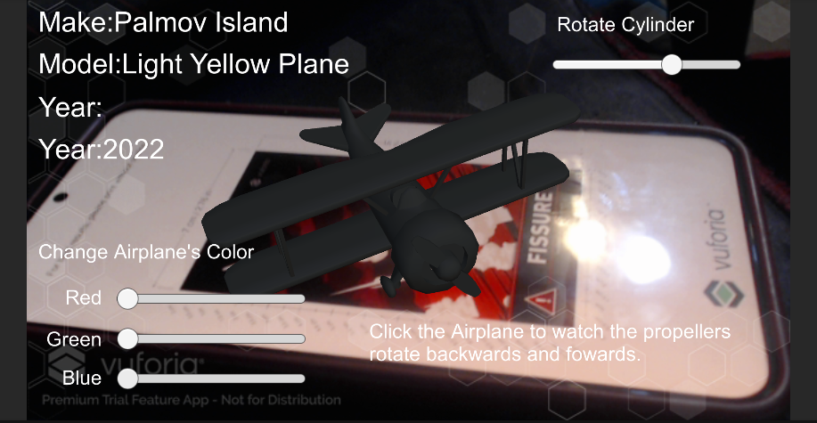
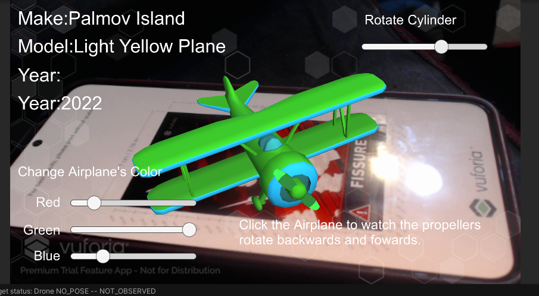
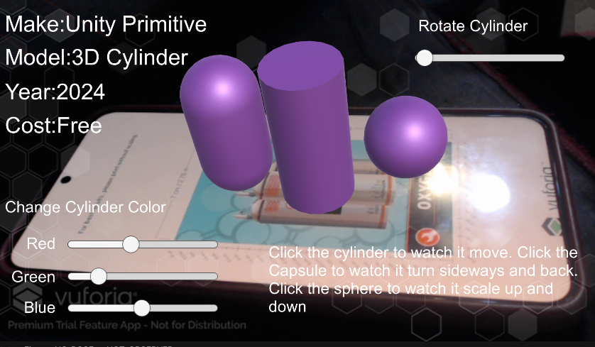
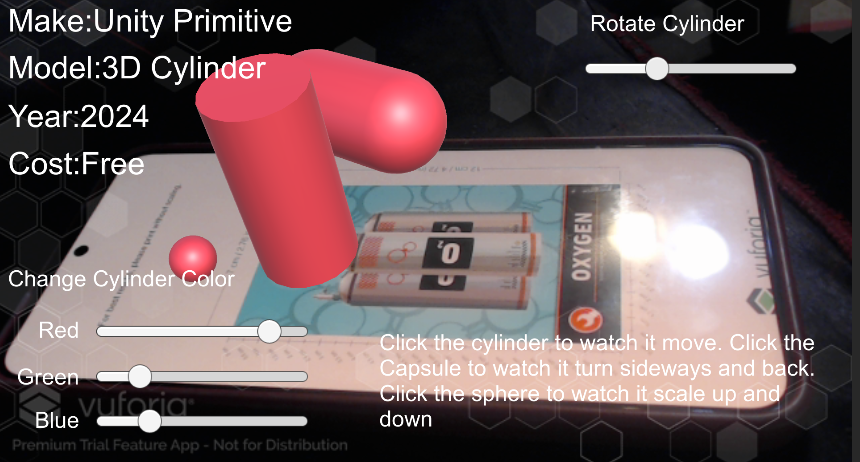
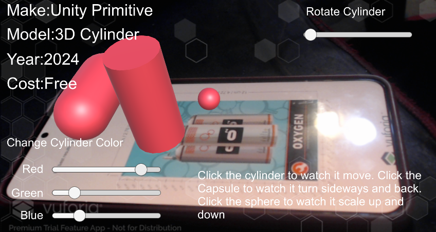
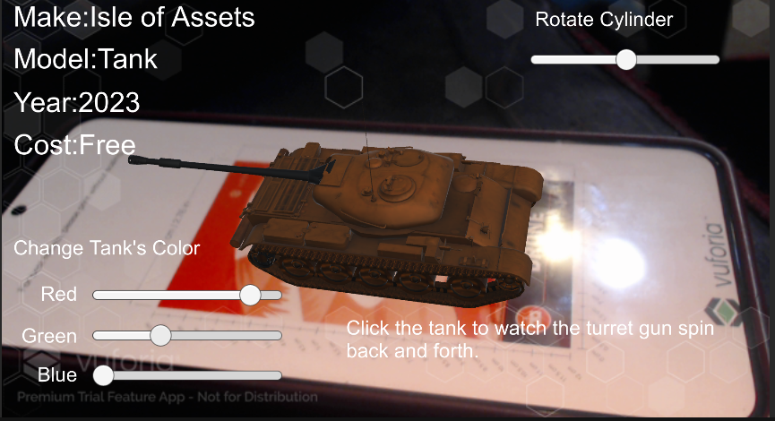
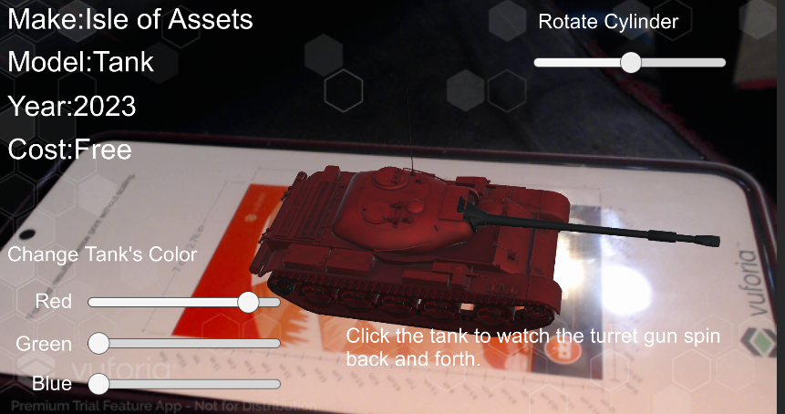
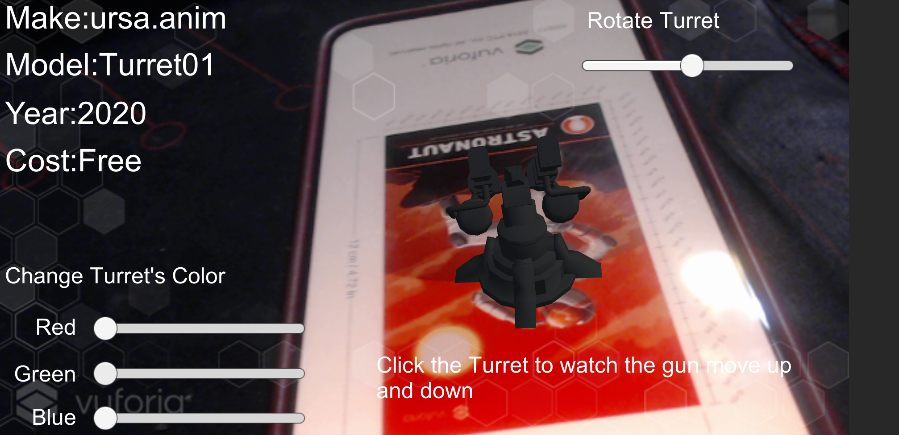
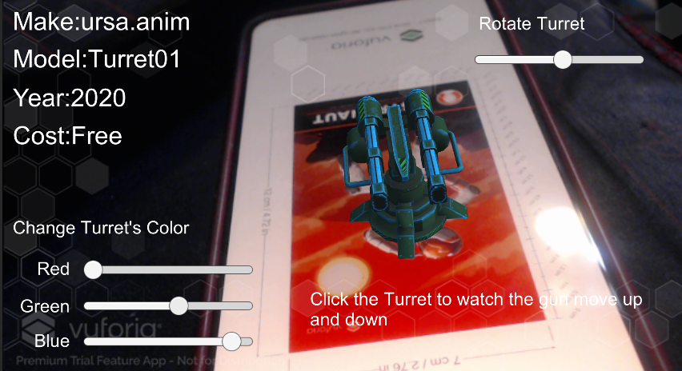

3D Models!
This webpage will explore and explain the 3 different models ive made in unity!
Airplane model


The airplane model is a simple model of an airplane that I created using basic shapes in Unity. The model consists of a fuselage, wings, and a tail. The model is textured with a simple material and has a basic design. In addition to this, a script was created to allow the airplane to change color and rotate with a variety of sliders, and by clicking it the propeller will spin. Overall, the airplane model is a simple but effective representation of an airplane that can be used to improve ones skills.
Shapes model



The shapes model is a simple model that I created using basic shapes in Unity. The model consists of a capsule, a sphere, and a cylinder. The model is textured with a simple material and has a basic design. Overall, the shapes model is a good starting point for learning how to create 3D models in Unity and can be used as a base for creating more complex models in the future. In addition to this, a script was created to allow the shapes to change color and rotate with a variety of sliders as well as clicking on each shape does something different. Clicking on the capsule will make it rotate sideways, clicking on the sphere will make it shrink/expand, and clicking on the cylinder will make all 3 shapes move.
Tank model


The tank model is a simple model of a tank that I created using basic shapes in Unity. The model consists of a body, turret, and tracks. The model is textured with a simple material and has a basic design. In addition to this, a script was created to allow the tank to change color and rotate with a variety of sliders as well as clicking on the tank will make the head of the tank to rotate.
Turret model


The turret model is a simple model of a turret that I created using basic shapes in Unity. The model consists of a base and a barrel. The model is textured with a simple material and has a basic design. In addition to this, a script was created to allow the turret to change color and rotate with a variety of sliders as well as clicking on the turret will make the barrel rise and fall.